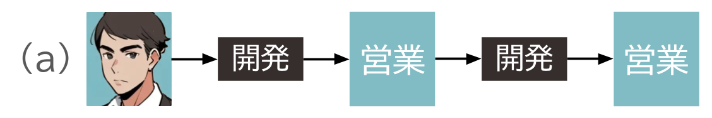
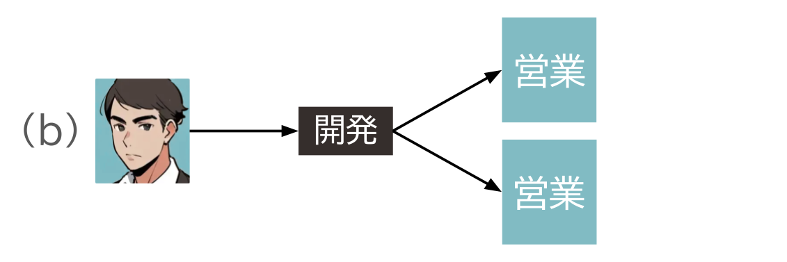
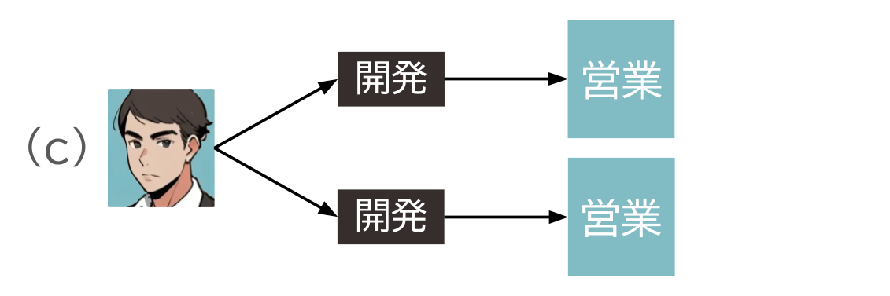
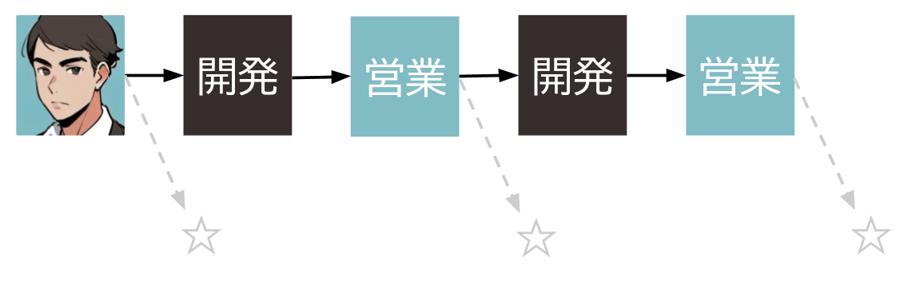
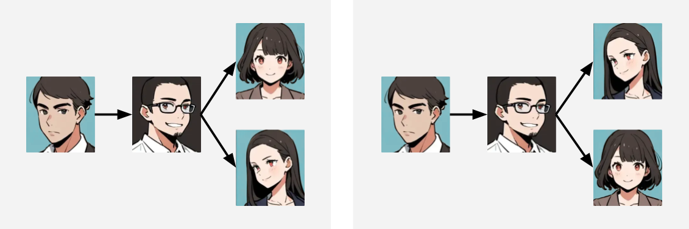
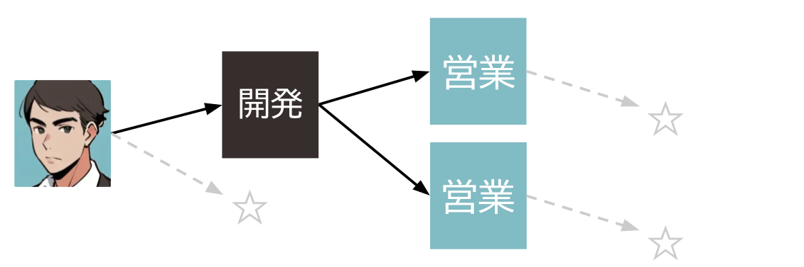
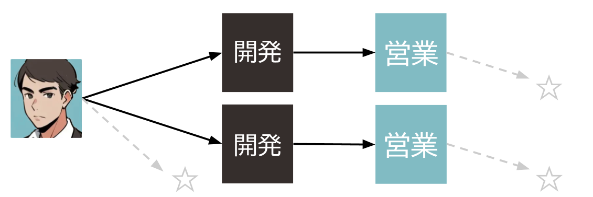

令和 7 年の年賀問題として、ある架空の企業の人物相関図を想像するというものを掲載しました。
すでに解説編も掲載したのですが、最近、何気なく AI に訊いてみたところ、もっと簡単な別解が出てきたので紹介します。

なお、題意の補足として、「誰が創業者であるかは知っているが、他の社員の入社順は知らない」という前提で考えるものとします。
あり得る相関図を分類する
本問は、「何通りありますか」という問題です。このようなものは、数え上げの問題とよばれていますね。とくに本問では、問題文で示された「人物相関図」というものが何通りあり得るかを考えています。
数え上げの基本的な方針の一つとして、「分類して数える」というものがあります。
少ないものに注目する
分類するときには、なるべく少数のパターンに分類できるほうがよいですね。また、パターンに分類したあとは、計算が簡単にできなければなりません。
ここでは、営業職が 3 名しかいないことに注目して、営業職が相関図の中でどんな位置関係になっているか によって分類することにします。
営業職 3 名のうち 1 人は創業者なので、残りの 2 人がどうやって紹介されてきたかを考えましょう。
以下の 3 つのパターンに分けることができます。
- 
- 
- 
枝葉はあとで考える
なお、この図では、営業職の紹介に関わっていない開発職は省略しています。
また、創業者を除いては、社員の具体的な名前を省略し、営業職または開発職という区分のみで図をかいています。
このように 注目する部分以外を抽象化すること も一つのポイントです。あとでわかるように、これらの省略した要素は、後から簡単に計算できるからです。
それぞれのパターンを数える
(a), (b), (c) の相関図が何通りあるかを計算しましょう。
先程のパターンを実際の人物相関図に直すには、以下のことをすればよいですね。
- 実際の社員の名前をあてはめる
- 省略されていた開発職を、図に追加する
名前のあてはめ方や、追加の仕方が何通りあるかを考えましょう。
(a) の計算
図には、営業職が 2 人、開発職が 2 人描かれています。
営業職の名前のあてはめ方は 2P2 = 2 (通り)
開発職の名前のあてはめ方は 5P2 = 20 (通り)
よって、全員の名前のあてはめ方は
2 × 20 = 40 (通り)
残りの 3 人の開発職は、下の図の ☆ の箇所から任意に選んで追加すればよいので
33 = 27 (通り)

これらから
40 × 27 = 1080 (通り)
(b) の計算
図には、営業職が 2 人、開発職が 1 人描かれています。
営業職の名前のあてはめ方は 2P2 = 2 (通り)
開発職の名前のあてはめ方は 5P1 = 5 (通り)
ここで、枝分かれした 2 つの枝は、位置を入れ替えても区別ができません。そのため、名前をあてはめたとき、図では別のように見えても実際には同じであるあてはめ方が
2! = 2 (通り)
ずつあります。たとえば、下の図の 2 つのあてはめ方は、同じ相関図を表します。

よって、名前のあてはめ方は結局
(2 × 5) ÷ 2 = 5 (通り)
残りの 4 人の開発職は、下の図の ☆ の箇所から任意に選んで追加すればよいので
34 = 81 (通り)

これらから
5 × 81 = 405 (通り)
(c) の計算
図には、営業職が 2 人、開発職が 2 人描かれています。
営業職の名前のあてはめ方は 2P2 = 2 (通り)
開発職の名前のあてはめ方は 5P2 = 20 (通り)
ここでも (b) と同様、名前をあてはめたとき同じになるあてはめ方が
2! = 2 (通り)
あるので、名前のあてはめ方は結局
(2 × 20) ÷ 2 = 20 (通り)
残りの 3 人の開発職は、下の図の ☆ の箇所から任意に選んで追加すればよいので
33 = 27 (通り)

これらから
20 × 27 = 540 (通り)
合計して答えを得る
求めるものは、(a), (b), (c) の合計であるから
1080 + 405 + 540 = 2025 (通り)
とわかります。
解説編では、離散グラフの分野における公式などを持ち出していましたが、どうやら私は難しく考えすぎていたようです。
実際には、高校の数学 I で「場合の数」として扱われてもおかしくはない問題でした。（入試レベルで、しかも高めだとは思います。）